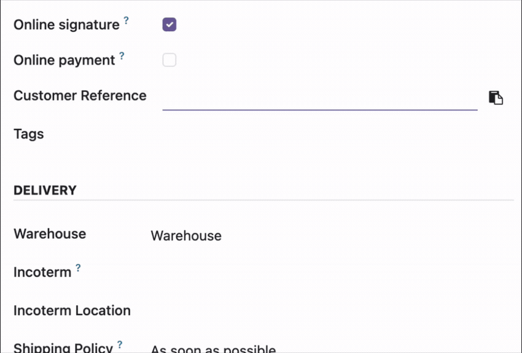
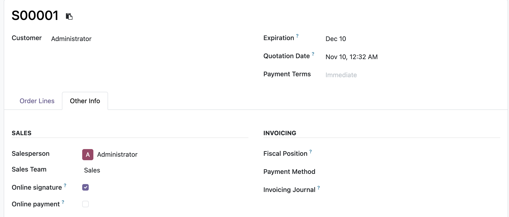

Copy Char and Text field values with one click in Odoo 19.
Click the copy icon beside a field, then paste its value wherever you need it.


Install web_field_copy from the Apps menu. The copy buttons are available automatically on supported fields; no additional configuration is required.